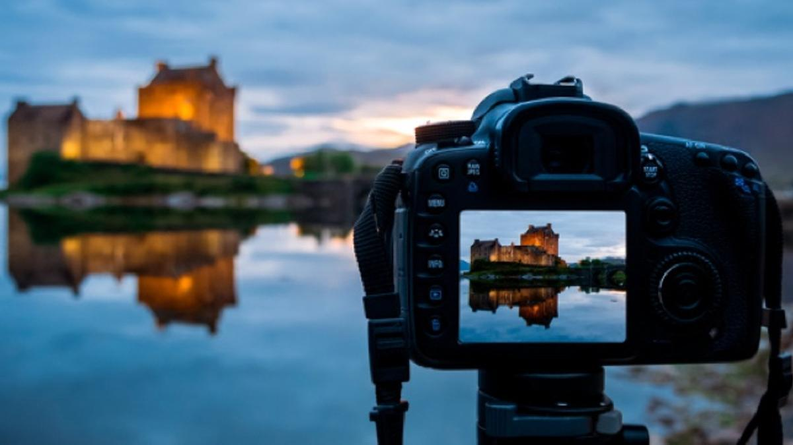
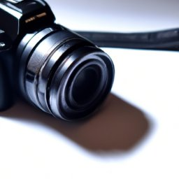

Curso de Fotografía para Principiantes

Descripción del Curso
Este curso está diseñado para principiantes que desean aprender los fundamentos de la fotografía. A lo largo de varias lecciones, exploraremos la teoría, la práctica y las técnicas esenciales para capturar imágenes impresionantes.
Duración del Curso
Duración total: 90 minutos
Objetivos del Curso
- Comprender los conceptos básicos de la fotografía.
- Aprender a utilizar diferentes tipos de cámaras y sus configuraciones.
- Desarrollar habilidades de composición y edición de imágenes.
- Fomentar la creatividad a través de proyectos prácticos.
Contenido del Curso
- Módulo 1: Introducción a la Fotografía (10 minutos)
- Módulo 2: Conociendo tu Cámara (15 minutos)
- Módulo 3: Fundamentos de la Composición (15 minutos)
- Módulo 4: Técnicas Fotográficas (20 minutos)
- Módulo 5: Edición y Postproducción (20 minutos)
- Módulo 6: Recursos y Proyectos Prácticos (10 minutos)
Módulo 1: Introducción a la Fotografía
La fotografía es una forma de arte que permite capturar momentos y expresar emociones. En este módulo, aprenderás sobre la historia de la fotografía, los tipos de fotografía y el equipo básico que necesitarás.
Historia de la Fotografía
La fotografía ha evolucionado desde la cámara oscura hasta las modernas cámaras digitales. Comprender su historia te ayudará a apreciar su desarrollo como forma de arte.
Tipos de Fotografía
- Retrato
- Macro
- Paisaje
- Fotografía callejera
Módulo 2: Conociendo tu Cámara

En este módulo, explorarás los diferentes tipos de cámaras y cómo utilizarlas.
Tipos de Cámaras
Las cámaras se dividen en varias categorías: DSLR, sin espejo, compactas y teléfonos inteligentes. Conocer las diferencias te ayudará a elegir la mejor opción para ti.
Configuraciones Básicas
- ISO: Controla la sensibilidad del sensor a la luz.
- Apertura: Controla la cantidad de luz que entra en la cámara.
- Velocidad de obturación: Determina cuánto tiempo se expone el sensor a la luz.
Módulo 3: Fundamentos de la Composición
Una buena composición es clave para tomar fotos atractivas. En este módulo, aprenderás las reglas básicas de composición.
Reglas de Composición
- Regla de los tercios: Divide la imagen en tercios para un mejor equilibrio.
- Líneas guías: Usa líneas naturales para guiar la vista.
- Simetría: Encuentra simetría para un impacto visual fuerte.
Módulo 4: Técnicas Fotográficas
Aprenderás varias técnicas para capturar imágenes impactantes.
Fotografía de Retrato
Consejos sobre la iluminación, la postura y el enfoque para retratos impresionantes.
Fotografía de Paisaje
Mejores prácticas para capturar la belleza de la naturaleza.
Fotografía Nocturna
Consejos para fotografiar en condiciones de poca luz y con largas exposiciones.
Módulo 5: Edición y Postproducción
La edición es una parte importante del proceso fotográfico. Aprenderás a utilizar software de edición popular.
Herramientas de Edición
- Lightroom: Ideal para la organización y edición de fotos.
- Photoshop: Para edición más avanzada y retoque.
Técnicas Básicas de Edición
- Ajustes de exposición y contraste.
- Corrección de color y balance de blancos.
- Recorte y enderezado de la imagen.
Módulo 6: Proyectos Prácticos
Realiza los siguientes ejercicios para aplicar lo aprendido:
- Captura 10 retratos diferentes usando distintas configuraciones.
- Realiza una serie de fotos de paisajes en diferentes momentos del día.
- Edición de una de tus mejores fotos utilizando Lightroom o Photoshop.
Conclusión
¡Felicidades! Has completado el curso de fotografía para principiantes. Te animamos a seguir practicando y explorando el mundo de la fotografía.
Inscripción
Para inscribirte en el curso, por favor visita la sección de inscripción.